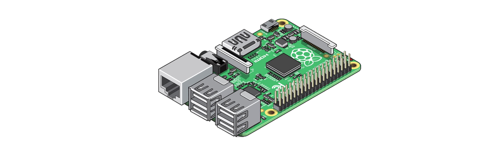

Get Involved!

Visit the GitHub repository below to take a peek at the code so far. It's not much, but we'll get there with your help!
So are we. That is why we are introducing a new way to have multiple operating systems co-exist on one SD card. Gone are the days of having to worry about corrupting your operating systems, or spending hours flashing SD cards. With UniFiPi, Pi enthusiasts can take advantage of having multiple operating systems all in one place. This project is also proudly open-source.

Visit the GitHub repository below to take a peek at the code so far. It's not much, but we'll get there with your help!
Version: 0.0.0 - Not even started yet
•Introduced new website
•Created GitHub repository
Nothing too crazy for now, but it'll get there!
Welcome to the project!
August 2nd, 2023 • Colby Pryor
Howdy! Welcome to the UniFiPi Project! For those of you who do not know me, the name's Colby. I am an IT Systems Administrator passionate about
all things Pi. The idea for this project came from spending some time over to a good friend's house who had an emulator on his Dell computer. Now I know what you're thinking, no it's
not a Pi. However, this took me back to emulators on my Raspberry Pi and the many things the Pi could do. However, one thing it could not do was have multiple operating systems.
Leaving people to constantly flash whenever they wanted to try a new operating system, which could be very tedious or damaging to your Pi or SD card.
Enter UniFiPi, an
open-sourced fun little project to help solve this issue. I know right now things may look a little bleak, but with time it will all come together. So prepare for many posts here,
as I try to wrap my head around both hardware and software and pull this thing off. Feel free to contribute yourself as well if you feel inclined! Here we go!